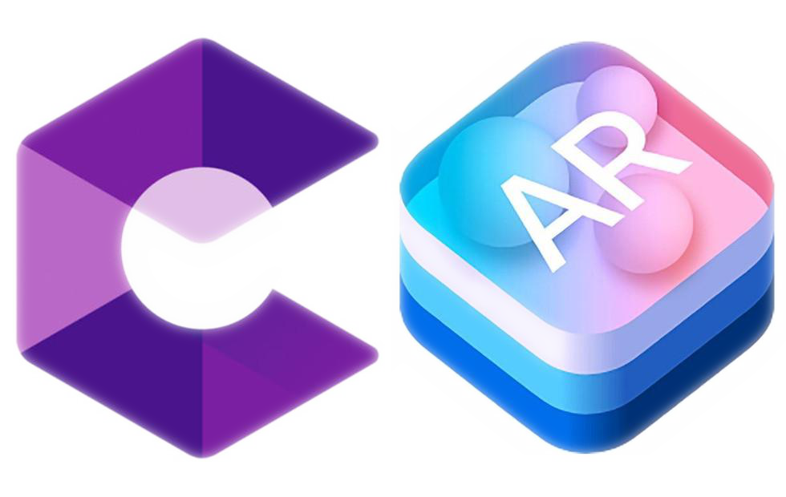

CoughDrop Partners and Supported Integrations
CoughDrop is committed to working with other companies and organizations to provide communicators with the best possible experience. Here are some of the partners and compatible resources we have available.
PicSeePal, Jabberwocky
Community Partners
Community partners are technical and support partners that provide assistive technology resources and tools that can also make CoughDrop usage more effective for some communicators and their support teams.
Symbol Partners
CoughDrop has partnered with a number of different symbol libraries to provide customers with flexibility to choose the images and symbols that will work best for them.
-
OpenSymbols

OpenSymbols, an OpenAAC project, are a collection of free, open-licensed symbols that can be used with attribution by anyone to create lessons, activities, etc. using the same symbols as CoughDrop.
-
LessonPix

LessonPix is a collection of over 40,000 simplified symbols with built-in templates for different learning activities and resources. The symbols are adaptable and can be combined to create unique icons personalized for communicators.
-
SymbolStix (News2You)

SymbolStix is a symbol library by News2You with contemporary symbols, accompanying activity generators, and news resources that all use the same stick-figure style.
-
Tobii Dynavox

The PCS (BoardMaker) symbols by Tobii Dynavox are a library of hand-drawn symbols that are also included in the BoardMaker app.
Compatible Hardware
Switches
CoughDrop's built-in switch-activated scanning will work with one or two switch actions. Most if not all bluetooth switches should work with CoughDrop via keyboard emulation, and on Windows other keyboard-style switches can also be configured in a user's preferences.
-
Logitech Adaptive Gaming

The Logitech Adaptive Gaming Kit includes 12 various types of plug-in switches (not just for gaming!) at the cheapest price on the market.
-
AbleNet Blue2

The Blue2 switch worked with mobile and Windows devices and provides one and two-button switch control.
Eye Gaze
On Windows devices, you can download and install the CoughDrop app to use CoughDrop with hardware eye trackers. Settings like dwell time and activation distance can be configured in a user's preferences.
Head Pointers and Mice
The mouse cursor on Windows can be controlled by many different kinds of interface, including some header pointers and head mouse tools. These apps and devices can be configured using CoughDrop's built-in dwell tracking, available on some platforms.
-
Camera Mouse

Camera Mouse is a free head-tracking Windows app that uses the computer's camera to control the mouse cursor.
-
Smyle Mouse

Smylee Mouse is a Windows app that uses the camera to track your head movements, and allows you to "click" using facial gestures.
-
Joysticks/Controllers

Gaming controllers and handheld mouse controllers can also be used with CoughDrop, with optional button selection mode.
-
Android/iOS AR

CoughDrop integrates with Augmented Reality libraries called ARCore and ARKit to provide head tracking on enabled Android/iOS devices.
Bluetooth Speakers
Some devices don't have loud enough speakers, or have speakers that point the wrong direction so they don't help a communicator speak effectively. Bluetooth speakers can be used with CoughDrop to facilitate communication, and even to make using CoughDrop just a little more fun.
-
Amazon Speaker

Amazon's entry-level bluetooth speaker comes at an affordable price, and includes a clip for attaching to a backpack, strap, etc.
-
JBL Clip

The JBL Clip 3 is a higher-end portable bluetooth speaker that can clip onto a lanyard, backpack, etc. so AAC speech generation comes more naturally from the communicator rather than the device.
-
Bluebee Pals

Bluebee Pals are cute stuffed animals with a built-in bluetooth speaker whose mouths move as they speak. They can be a great reinforcement tool for developing communicators.
Key Guards
For some users it can be hard to get their fingers down on the right buttons. Keyguards can help them navigate to the right place, and some companies can create custom keyguards for just about any CoughDrop board configuration.